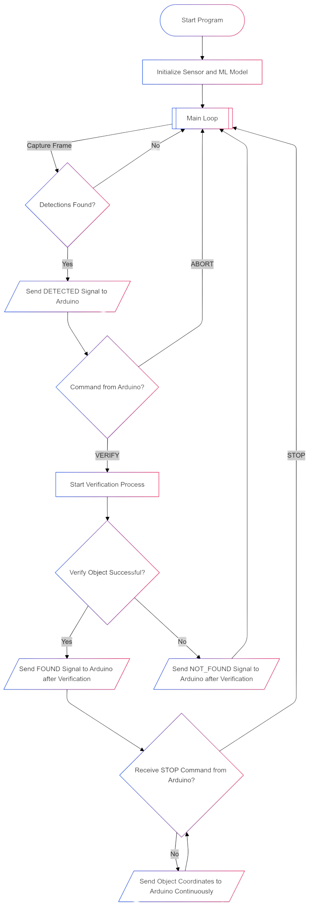

Table of Contents
Controlflow

Docs
Wichtige Zustände
| Konstante | ByteValue | Beschreibung |
|---|---|---|
| DETECTED | 1 |
Ein Objekt wurde erkannt. |
| VERIFY | 2 |
Eine Verifikation des Objekts wird angefordert. |
| ABORT | 3 |
Die Verifikation wird abgebrochen. |
| FOUND | 4 |
Das Objekt wurde erfolgreich verifiziert. |
| NOT_FOUND | 5 |
Die Verifikation ist fehlgeschlagen. |
| CONTINUE | 6 |
Das System setzt die Erkennung fort. |
| STOP | 7 |
Das System stoppt die Koordinatensendung. |
Bibliotheken
pyb: Für die Interaktion mit der Pyboard-Hardware.sensor: Zum Steuern der Kamera.image: Zur Bildverarbeitung und Blob-Erkennung.ml: Für das Laden und Ausführen des TensorFlow Lite Modells.uos,gc: Für das Dateisystem und die Speicherkontrolle.uasyncio: Für asynchrone Aufgaben und zeitgesteuerte Operationen.
Code-Übersicht
Initialisierung
Zu Beginn werden die UART-Schnittstelle und die Kamera konfiguriert. Das maschinelle Lernmodell wird aus einer .tflite-Datei geladen und die Labels werden aus einer Datei labels.txt gelesen.
uart = UART(3, 9600)
sensor.reset()
sensor.set_pixformat(sensor.RGB565)
sensor.set_framesize(sensor.QVGA)
sensor.set_vflip(False)
try:
net = ml.Model("trained.tflite", load_to_fb=uos.stat('trained.tflite')[6] > (gc.mem_free() - (64 * 1024)))
except Exception:
raise Exception("Error with tflite")
try:
labels = [line.rstrip('\n') for line in open("labels.txt")]
except Exception:
raise Exception("Error with labels.txt")
Model Setup
Das Modell wird aus einer .tflite-Datei geladen, und falls es nicht genügend freien Speicher gibt, wird ein Fehler geworfen.
net = ml.Model("trained.tflite", load_to_fb=uos.stat('trained.tflite')[6] > (gc.mem_free() - (64 * 1024)))
Erkennung und Verifikation
Bildverarbeitung
process_frameverarbeitet jedes Kamerabild, um Objekte zu erkennen, und gibt eine Liste der erkannten Objekte zurück:
def process_frame(net, img, min_confidence):
detection_list = []
for i, detection in enumerate(net.predict([img], callback=fomo_post_process)):
if i == 0: continue
if len(detection) == 0: continue
for x, y, w, h, score in detection:
if score >= min_confidence:
center_x = math.floor(x + (w / 2))
center_y = math.floor(y + (h / 2))
detection_list.append((center_x, center_y, score, i))
return detection_list
Objektverifikation
N_FRAMES= Anzahl der Frames welche beiverify_object_asyncgeprüft werdenMIN_FRAMES= Anzahl der Frames welche beiverify_object_asyncpositv sein müssen
verify_object_async ermöglicht dem System die Erkennung eines bestimmten Objekts zu verifizieren. Dies wird durch die Funktion durchgeführt, die sicherstellt, dass das erkannte Objekt auch weiterhin an der gleichen Position bleibt.
async def verify_object_async(net, min_confidence, initial_label, initial_x, initial_y, n_frames=10, min_required_detection_count=8):
detection_count = 0
frame_count = 0
while frame_count < n_frames:
img = sensor.snapshot()
detection_list = process_frame(net, img, min_confidence)
for (center_x, center_y, score, label) in detection_list:
if score >= min_confidence and label == initial_label:
if abs(center_x - initial_x) < 20 and abs(center_y - initial_y) < 20:
detection_count += 1
frame_count += 1
return detection_count >= min_required_detection_count
Kommunikation mit dem Arduino
Koordinaten senden
send_coordinates_async sendet die erkannten Koordinaten des Objekts:
async def send_coordinates_async(x, y, label):
message = bytearray([x >> 8, x & 0xFF, y >> 8, y & 0xFF, label])
uart.write(message)
await uasyncio.sleep(0.05)
Statusnachrichten
send_to_arduino sendet Statusnachrichten (Koordinaten,Label) an den Arduino:
def send_to_arduino(message):
uart.write(message)
p9.high()
time.sleep(0.05)
p9.low()
Asynchrone Kommunikation und Ablauf
communication_and_detection ist der Hauptsteuerfluss, der die Objekterkennung und -verifikation kombiniert und die Koordinaten an das Arduino sendet.
async def communication_and_detection():
possible = False
initial_object = None
initial_x = initial_y = None
while True:
img = sensor.snapshot()
detection_list = process_frame(net, img, min_confidence)
if detection_list:
send_to_arduino(DETECTED)
await uasyncio.sleep(0.05)
if uart.any():
command = uart.read().decode().strip()
if command == str(VERIFY):
possible = True
initial_object = detection_list[0][3]
initial_x, initial_y = detection_list[0][0], detection_list[0][1]
print("Verifikation gestartet. Objekt erkannt.")
elif command == str(ABORT):
possible = False
if possible:
if await verify_object_async(net, min_confidence, initial_object, initial_x, initial_y):
send_to_arduino(FOUND)
print("Verifikation erfolgreich.")
while True:
if uart.any():
command = uart.read().decode().strip()
if command == str(STOP):
print("Abbruchbefehl empfangen. Beende die Koordinatensendung.")
break
img = sensor.snapshot()
detection_list = process_frame(net, img, min_confidence)
for (center_x, center_y, score, label) in detection_list:
if label == initial_object and score >= min_confidence:
await send_coordinates_async(center_x, center_y, label)
await uasyncio.sleep(0.05)
else:
send_to_arduino(NOT_FOUND)
print("Verifikation fehlgeschlagen.")
possible = False
else:
send_to_arduino(CONTINUE)
send_to_arduino(STOP)